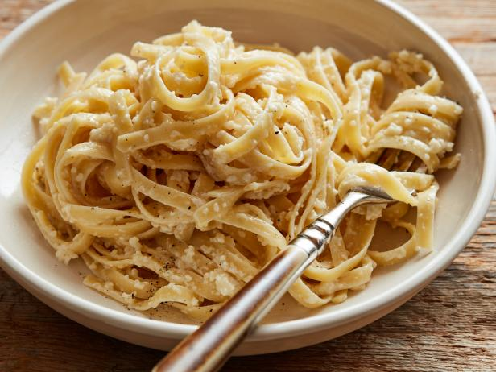

Fettucine Alfredo

Description
A homecooked fettucine alfredo recipe, courtesy of Food Network's Ree Drummond.
I have tried many different alfredo recipes, but this is one of the best.
The sauce turned out perfectly creamy, and complimented everything wonderfully!
Ingredients
- 1 pound fettucine noodles
- 1 stick butter
- 1 cup heavy cream
- Salt and freshly ground black pepper
- 2 cups freshly grated Parmesan
Steps
- Cook the pasta according to package directions.
- In a saucepan or skillet over low heat, warm the butter and cream. Season with salt and pepper.
- Place half of the Parmesan into a large serving bowl.
- Pour the warm butter/cream mixture over the top.
- Drain the pasta and immediately pour it into the bowl.
- Toss a couple of times, and then sprinkle in the other half of the Parmesan.
- Toss to combine, thinning with pasta water if necessary.
- Serve immediately as a main course or accompaniment to meat or salad. Delicious!
Return to main page